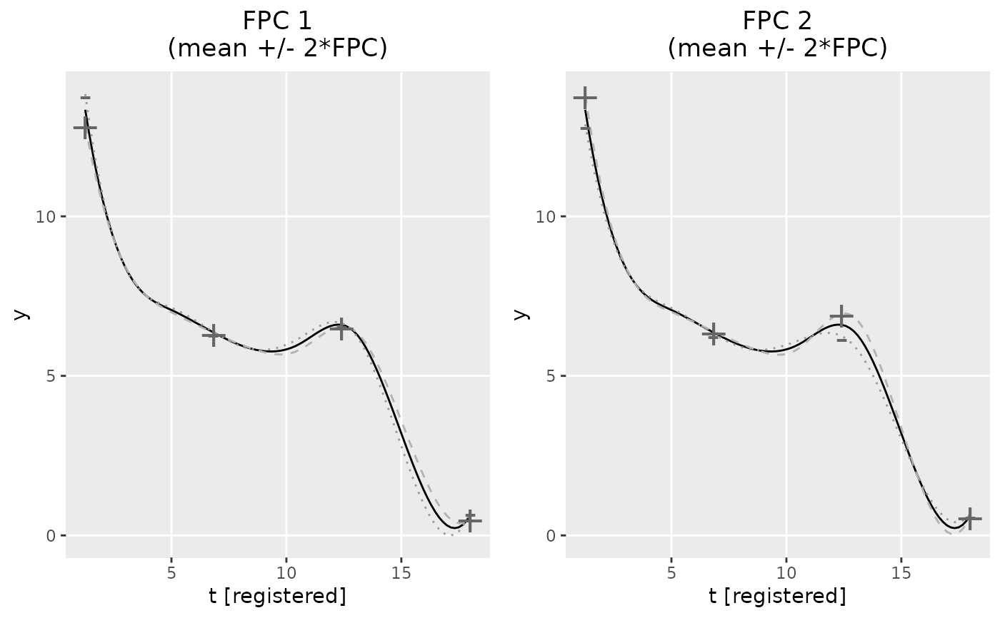
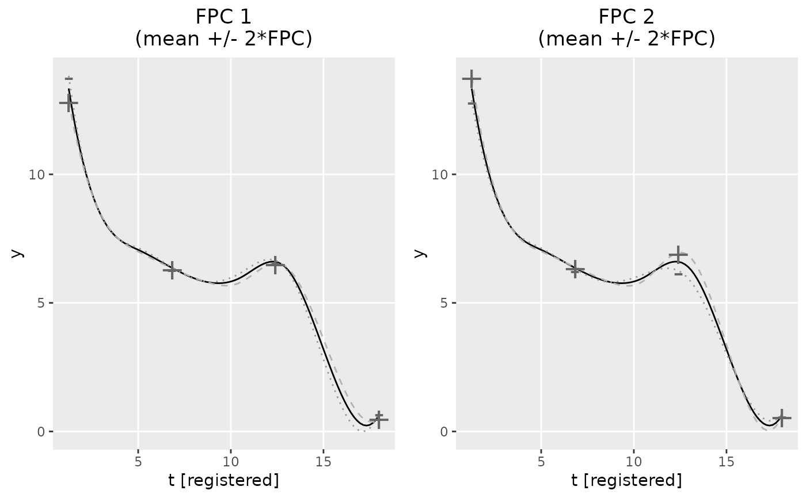

Functional principal components analysis via variational EM
fpca_gauss.RdFunction used in the FPCA step for registering functional data,
called by register_fpca when family = "gaussian".
Parameters estimated based on probabilistic PCA framework originally
introduced by Tipping and Bishop in 1999.
The number of functional principal components (FPCs) can either be specified
directly (argument npc) or chosen based on the explained share of
variance (npc_varExplained). For the latter, the solution is based
on running the FPCA with npc = 20 (and correspondingly Kt = 20)
before reducing the solution to the relevant number of FPCs. Doing so,
we approximate the overall variance in the data Y with the variance
represented by the FPC basis with 20 FPCs.
fpca_gauss(
Y,
npc = NULL,
npc_varExplained = NULL,
Kt = 8,
maxiter = 20,
t_min = NULL,
t_max = NULL,
print.iter = FALSE,
row_obj = NULL,
seed = 1988,
periodic = FALSE,
error_thresh = 1e-04,
subsample = TRUE,
verbose = 1,
...
)Arguments
| Y | Dataframe. Should have variables id, value, index. |
|---|---|
| npc, npc_varExplained | The number of functional principal components (FPCs)
has to be specified either directly as |
| Kt | Number of B-spline basis functions used to estimate mean functions
and functional principal components. Default is 8. If |
| maxiter | Maximum number of iterations to perform for EM algorithm. Default is 50. |
| t_min | Minimum value to be evaluated on the time domain. |
| t_max | Maximum value to be evaluated on the time domain. |
| print.iter | Prints current error and iteration |
| row_obj | If NULL, the function cleans the data and calculates row indices.
Keep this NULL if you are using standalone |
| seed | Set seed for reproducibility. Defaults to 1988. |
| periodic | If TRUE, uses periodic b-spline basis functions. Default is FALSE. |
| error_thresh | Error threshold to end iterations. Defaults to 0.0001. |
| subsample | if the number of rows of the data is greater than 10 million rows, the `id` values are subsampled to get the mean coefficients. |
| verbose | Can be set to integers between 0 and 4 to control the level of detail of the printed diagnostic messages. Higher numbers lead to more detailed messages. Defaults to 1. |
| ... | Additional arguments passed to or from other functions |
Value
An object of class fpca containing:
Information that FPCA was performed with the 'variationEM' approach, in contrast to registr::gfpca_twoStep.
Time vector over which the mean mu and the functional principal
components efunctions were evaluated.
Cutpoints for B-spline basis used to rebuild alpha.
\(D \times npc\) matrix of estimated FPC basis functions.
Estimated variance of the FPC scores.
Approximation of the overall variance in Y, based
on an initial run of the FPCA with npc = 20. Is NULL if
npc_varExplained was not specified.
number of FPCs.
\(I \times npc\) matrix of estimated FPC scores.
Estimated population-level mean.
Estimated population-level mean. Same value as alpha but included for compatibility
with refund.shiny package.
B-spline basis coefficients used to construct subject-specific means.
For use in registr() function.
FPC approximation of subject-specific means.
The observed data.
gaussian, for compatibility with refund.shiny package.
Estimated error variance
References
Tipping, M. E. and Bishop, C (1999). Probabilistic Principal Component Analysis. Journal of the Royal Statistical Society Series B,, 592--598.
Author
Julia Wrobel julia.wrobel@cuanschutz.edu, Jeff Goldsmith ajg2202@cumc.columbia.edu, Alexander Bauer alexander.bauer@stat.uni-muenchen.de
Examples
data(growth_incomplete)
# estimate 2 FPCs
fpca_obj = fpca_gauss(Y = growth_incomplete, npc = 2)
#> Warning: fpca_gauss convergence not reached. Try increasing maxiter.
plot(fpca_obj)
 # estimate npc adaptively, to explain 90% of the overall variation
fpca_obj2 = fpca_gauss(Y = growth_incomplete, npc_varExplained = 0.9)
#> Warning: fpca_gauss convergence not reached. Try increasing maxiter.
#> Using the first 7 FPCs which explain 91.8% of the (approximated) total variance.
plot(fpca_obj, plot_FPCs = 1:2)

# estimate npc adaptively, to explain 90% of the overall variation
fpca_obj2 = fpca_gauss(Y = growth_incomplete, npc_varExplained = 0.9)
#> Warning: fpca_gauss convergence not reached. Try increasing maxiter.
#> Using the first 7 FPCs which explain 91.8% of the (approximated) total variance.
plot(fpca_obj, plot_FPCs = 1:2)
